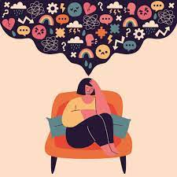

Duševno ili mentalno zdravlje je izraz koji se često upotrebljava da opiše postojanje ili nepostojanje duševne bolesti. Precizna definicija ili klasifikacija duševnih bolesti su predmetom trajnih kontroverzi, najčešće zbog toga što je psihijatrija - nauka o duševnim bolestima - nije pratila napredak ostalih grana medicine, odnosno daleko više je bila pod uticajem raznoraznih političkih, ekonomskih i kulturnih faktora. Tako se, na primjer, zalaganje za komunizam u SAD 1950-ih smatralo duševnom bolešću, dok su se 1970-ih u SSSR-u kritičari komunizma slali u duševne bolnice. Nešto svježiji primjer je homoseksualnost, koja je sve do ranih 1970-ih smatrana za duševnu bolest, dok se takvo mišljenje danas u mnogim krugovima smatra za simptom duševne bolesti zvane homofobija.
Psihički poremećaji su se delili nekada na samo dve kategorije - neuroze i psihoze.
Neuroze su lakši psihički poremećaji čije su zajedničke odlike anksioznost, neprilagođenost i nezadovoljstvo. Anksiozni poremećaji su oni kojima je zajednička anksioznost ili strah koji nema izvor u realnoj opasnosti. Između ostalih, tu spadaju generalizovani anksiozni poremećaj i fobije. Somatoformni poremećaji se izražavaju u vidu telesnih simptoma, a jedan od oblika tih poremećaja je hipohondrija.
Psihoze su teški psihički poremećaji koji dovode do gubitka kontakta sa realnošću, u šta spada shizofrenija. Shizofreniju odlikuje razgradnja gotovo svih psihičkih funkcija i manji ili veći gubitak kontakta sa realnošću.
Osnovni poremećaji raspoloženja su: depresija, manija i bipolarni poremećaji. Depresiju odlikuju simptomi kao što su tuga, beznadežnost, krivica, malodušnost. Maniju odlikuju preterana uzbuđenost, hiperaktivnost, osećanje svemoći, odsustvo umora i potrebe za spavanjem. Bipolarne poremećaje karakteriše smenjivanje faze manije i faze depresije.
Poremećaji ličnosti su trajni i nefleksibilni obrasci doživljavanja i ponašanja koji remete funkcionisanje osobe u raznim oblastima života; počinju da se ispoljavaju najkasnije u adolescenciji ili u ranom odraslom dobu,a nisu posledica zdravstvenih problema niti zloupotrebe droga, alkohola, lekova.
Emilija Krivokuća III-1